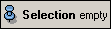
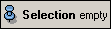
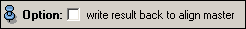

Ports
Alignment



The three ports above specify how the molecules are aligned to each other. See the description in the general section on alignment of molecules for a detailed explanation.
Option

Select this option if you want to iteratively improve the mean molecule.